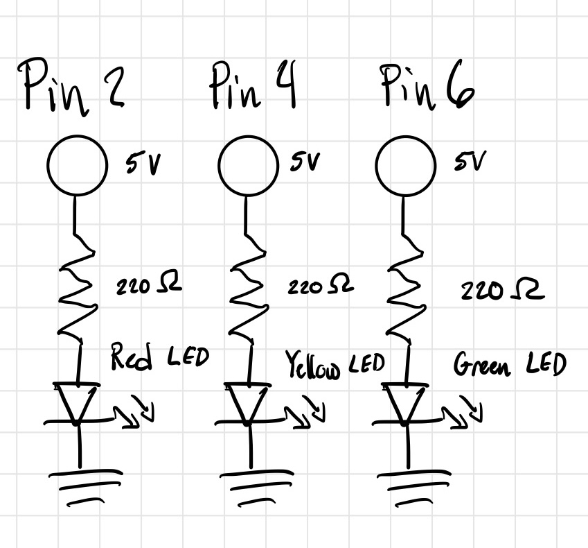
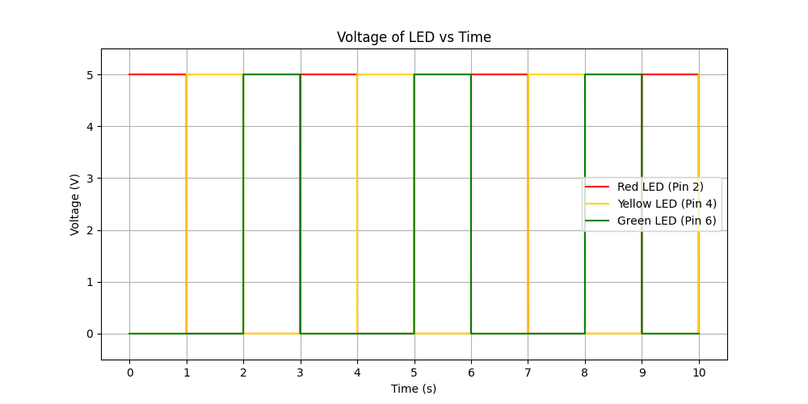

Schematics and Breadboard Circuitry


The provided schematic done shows the LEDs I used to create the circuitry using the Arduino
and breadboard shown above. Along with displaying the circuitry being connected to their
respective GPIO pins (2,4,6) and associated wire colors.
The following information was used to find the current using Ohm's Law:
20 mA is the desired current with 160Ω being its resistance for a voltage of 5V.
Given that we used a resistor of 220Ω, as that was the closest and safest
option to not burn out the LED when supplied with 5V. Using Ohm's Law (V=IR) and
the values provided (including the voltage drop of the LED) we can find the actual
current I = (5V - 1.8V) / 220Ω = 14.5 mA.
Arduino Code Snippet (.ino)
void setup() {
// Pins used to make each individual LED light up
pinMode(2, OUTPUT); // Sets digital pin 2 as the output for red LED
pinMode(4, OUTPUT); // Sets digital pin 4 as the output for yellow LED
pinMode(6, OUTPUT); // Sets digital pin 6 as the output for green LED
}
// Provided code below was code I learned from a workshop done years prior, I liked the simplicity
// of it so I chose to keep it for this assignment this include the functions made as well
void loop() {
redLight(); // Calls to turn on only red LED
delay(1000); // Waits for 1 second
yellowLight(); // Calls to turn on only yellow LED
delay(1000); // Waits for 1 second
greenLight(); // Calls to turn on only green LED
delay(1000); // Waits for 1 second
}
// Following three functions determine which LEDs are to be on
void redLight() {
digitalWrite(2, HIGH); // Red LED on
digitalWrite(4, LOW); // Yellow LED off
digitalWrite(6, LOW); // Green LED off
}
void yellowLight() {
digitalWrite(2, LOW); // Red LED off
digitalWrite(4, HIGH); // Yellow LED on
digitalWrite(6, LOW); // Green LED off
}
void greenLight() {
digitalWrite(2, LOW); // Red LED off
digitalWrite(4, LOW); // Yellow LED off
digitalWrite(6, HIGH); // Green LED on
}
Questions and Answers
1. Draw a graph where the X axis is time and the Y axis is voltage across the LEDs.
Draw a line for each of your 3 LEDs.

The graph shown above displays the voltage being used by each LED over a duration of time.
With each individual line representing their respective LED (Red, Yellow, and Green) and when they are
on (Flat line at 5V) and when they are off (Flat line at 0V). The interval between
the LEDs switching states is also displayed with one turning on immediately after the
previous one turns off.
2. How many LEDs could you blink independently with your Arduino? How much current would that draw?
Based on the arduino diagrams and what I can find online about the pins on the arduino board, there
is 14 digital (PWM) pins and 6 analog pins that can be used to blink 20 LEDs independently.
However, pins 0 and 1 are used for serial communication and may cause problems if being used
for other purposes besides that. So 18 pins can be technically used to blink LEDs independently.
With that stated, using the current we found using Ohm's law in a previous segment above (14.5 mA per LED),
if 18 LEDs are used, that will bring the amount of current drawn to be around 261 mA.
This far exceeds the safety limit of the board being 200 mA, which may cause problems to occur.
3. How fast do you need to blink your LEDs until you no longer can tell that they are blinking?
From what I can experiment with, 6 milliseconds is the point where I can not longer tell if
they are blinking in sequence. However, 7 milliseconds I am able to faintly see some blinking/dimming of each LED.
4. Did you use AI tools in completing this assignment? If yes, please provide details on how/when, as well as a brief reflection.
If no, you can either leave this question blank, or provide other information if you'd like.
I did use AI tools while completing this assignment, mainly ChatGPT. I used it to help with any clarification on questions, help on
any html or coding assistance, and whenever looking for information the normal way does not give me the results I want. My reflection on
using AI tools honestly help me a lot to express or try out new ways of thinking or organize the way I store information.
Although, I would still prefer to understand the code and the content connected to my projects in the more tradional way, AI has its perks
in simplifying anything that is too complex. I also see AI as more as an assistant to help me understand content better rather than it being use to find the solution.